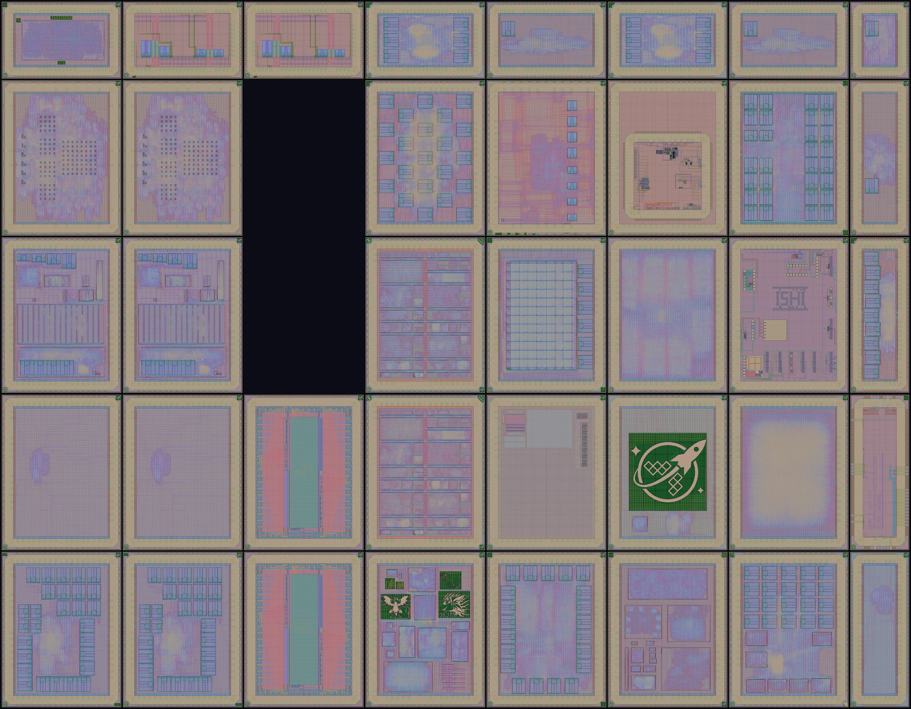

wafer.space Run 1
30 public designs on one GF180MCU reticle
Reserve a slot on wafer.space Run 3 Or start with Tiny Tapeout
What was built
The run as a whole: what its designs add up to.
30
Public designs
in 38 of the reticle's 40 slot positions
27
Open source
with a public repository and an open licence
52.8M
Transistors
across the unique designs
2.1M
Logic cells
gates and flip-flops
79 KiB
SRAM
in foundry and custom macros
26
Whole dies
and 12 half and quarter slots
Private designs are hidden in the public layout, so they are not counted. Designs placed more than once are counted once.
Make a chip of your own
Start small with a Tiny Tapeout tile, or go straight to a whole die on the next wafer.space run.
Make a whole chip of your own
Book a die to itself on wafer.space Run 3: orders close 9 December 2026.
Reserve a slotOr start with a Tiny Tapeout tile
Tiny Tapeout GF 26c and 26d take projects until 7 December 2026, to be made on wafer.space Run 3.
Submit a projectGet a Tiny Tapeout chip
Every Tiny Tapeout chip comes on a board you can plug in, with all of its projects ready to try.
Buy a chip and boardThe reticle

A5 · BTAP A4 · RZ80 A3 · TZ01 A2 · 2975 A1 · JKU2 B5 · BTAP B4 · RZ80 B3 · TZ01 B2 · 2975 B1 · OCD2 C5 · MOSB C4 · MOSB C1 · OCD2 D5 · AS03 D4 · TTPG D3 · TTP2 D2 · GD03 D1 · GD04 E5 · KIAN E4 · BRWN E3 · MOLE E2 · OCD1 E1 · TQVC F5 · JKU1 F4 · WSLG F3 · CHES F2 · MOS2 F1 · GD04 G5 · CAFE G4 · RZML G3 · ISHI G2 · RBOY G1 · TQVC H5 · HZ80 H4 · TRID H3 · GD02 H2 · TQVB H1 · TQVA C3 · Private C2 · PrivateEvery design rendered from the layout at the same scale and placed where it sits on the 30 × 23.4 mm reticle. The locked slots hold private designs, which are hidden in the public layout. Point at a die to see its name, and select it for its details.Every die is listed further down.
Slots
How much of the reticle each design took: a 1 × 1 slot is a whole die of its own, and the ½ sizes are halves and quarters of one. Some designs are placed more than once, so 30 designs fill 38 slots.
| 1 × 1 | 26 |
| 1 × ½ | 7 |
| ½ × 1 | 4 |
| ½ × ½ | 1 |
| Total | 38 |
|---|
Shuttle status
Where this run is now, from opening orders to shipping parts.
Done so far
- 28 November 2025, 23:59 AoE Purchase deadline Final deadline to purchase manufacturing slots
- 3 December 2025, 23:59 AoE Design submission Final deadline to submit GDS files for fabrication
- 8 January 2026 Tape-out to GlobalFoundries GDS files delivered to GlobalFoundries for fabrication
- 6 April 2026 Wafers returned Wafers back from GlobalFoundries
- 10 April 2026 First wafers diced The first wafers cut into individual dies
- 17 April 2026 Remaining wafers diced The rest of the wafers diced
- 20 April 2026 First dies sorted Dies picked from the first wafers for the first shipments
- 21 April 2026 First bare dies shipped Initial bare dies shipped to customers
- 25 April 2026 First packaged parts shipped Initial chip-on-board packaged parts shipped
- 4 May 2026 Bare dies shipped Sorted dies from the main batch of wafers shipped
Still to come
- Today, 28 October 2026
- 31 October 2026 (expected) Packaged parts shipped Chip-on-board packaged parts from the main batch of wafers shipped
- 5 November 2026 (expected) Last bare dies shipped Sorted dies from the last wafers shipped
- 5 December 2026 (expected) Last packaged parts shipped Chip-on-board packaged parts from the last wafers shipped
Missed this run? wafer.space Run 3 takes orders until 9 December 2026: reserve a slot.
From the wafer.space run schedule.
How people used their silicon
Where the area of 30 dies (507 mm² of silicon) actually went
- Logic cells 12% — gates and flip-flops doing the design's actual work
- SRAM 6% — memory macros
- Filler and tap cells 27% — inserted by the tools to keep rows continuous and wells tied
- Other 16% — routing channels, analog and custom layout, power grid and empty space
- Pad ring 39% — the 442 µm border of I/O cells and bond pads
What people built
The kinds of design on this run.
RISC-V and CPUs 10 Multi-project die 5 Analog and mixed-signal 3 Retro computing 3 Memory test chip 2 Accelerators 2 Art and logos 1 FPGA 1 Security 1 Test structures 1 Other digital 1Standard cell libraries
The ready-made gate libraries the designs were built from: how many tracks tall each cell is, and the voltage it runs at.
| Standard cell library | Logic cells | Share |
|---|---|---|
| 7t-5V gf180mcu_fd_sc_mcu7t5v0 | 1.7M | 77% |
| 9t-5V gf180mcu_fd_sc_mcu9t5v0 | 443k | 21% |
| AS 7t-3.3V gf180mcu_as_sc_mcu7t3v3 | 35k | 2% |
| AS extra 7t-5V gf180mcu_as_ex_mcu7t5v0 | 5k | <1% |
Area budget of every design
Each bar is one die, split the same way as above. Sorted by how much of the die is logic.
Which parts of the process were used
Transistor voltages and optional devices across the 30 designs
Transistor voltages
A design counts for a voltage when its standard cells, SRAM or its own transistors use it. 5 V and 6 V transistors share the thick gate oxide; a marker layer in the layout tells them apart.
Optional devices drawn by designers
Not drawn by any design: Native transistors, 10 V LDMOS, Diffusion resistors, N-well resistors, Metal resistors, Well diodes, Schottky diodes, Zener diodes, One-time programmable memory, Inductors.
Only devices outside standard cells, SRAM macros and I/O pads count, since every die has those. A single test structure counts the same as a large block. Faded names, listed last, have the device only inside a reused block; hover over one to see which.
Gate oxides
3.3 V transistors have the thin gate oxide; 5 V and 6 V ones share the thick one. "Own design" counts the standard cells, SRAM and transistors the designer chose; "with the pad ring" adds the transistors of the I/O pad cells, measured in each design's pad ring.
Licences
The licence each designer declared when submitting.
| Declared licence | Designs |
|---|---|
| Apache-2.0 | 22 |
| proprietary | 3 |
| GPL-3.0-only | 1 |
| CERN-OHL-S-2.0 | 1 |
| BSD-3-Clause | 1 |
| MIT | 1 |
| CERN-OHL-W-2.0 | 1 |
Some repositories carry a different licence file from the one declared at submission, or none: check a design's repository, and its page here, before reusing it.
Packaging and precheck
How the designs will be packaged, and whether they passed the design-rule checks before manufacture.
- Which designs chose chip-on-board packaging was not recorded for this run; 11 dies have bonding results.
- 29 of 30 designs passed the platform precheck they were accepted on (2025-12-10 to 2026-01-04), and 29 pass their latest re-run; RBOY has no finished precheck recorded.
- The KLayout DRC, the sign-off check, is clear in every one of these checks.
- The advisory Magic DRC reported errors for BRWN, CHES, GD04, KIAN, TRID.
- The platform no longer stores the step results of the checks TTP2, TTPG were accepted on; their pages show the latest re-run.
What fits on 1 mm² of GF180MCU silicon?
Theoretical maximum against what designers achieved
The maximum packs one cell type edge to edge with no room for wiring. Real designs need the wiring. Each box gives the most of a cell that fits with any GF180MCU library, then with the libraries this run used.
~114k
Inverters per mm²
GF180MCU maximum,
with
AS 7t-3.3V
inv_2
With this run's libraries:
| 7t-5V | 114k | inv_1 |
|---|---|---|
| 9t-5V | 89k | inv_1 |
| AS 7t-3.3V | 114k | inv_2 |
~76k
Buffers per mm²
GF180MCU maximum,
with
AS 7t-3.3V
buff_2
With this run's libraries:
| 7t-5V | 76k | buf_1 |
|---|---|---|
| 9t-5V | 59k | buf_1 |
| AS 7t-3.3V | 76k | buff_2 |
~17k
Flip-flops per mm²
GF180MCU maximum,
with
AS 7t-3.3V
dfxtp_2
With this run's libraries:
| 7t-5V | 16k | dffq_1 |
|---|---|---|
| 9t-5V | 13k | dffq_1 |
| AS 7t-3.3V | 17k | dfxtp_2 |
| AS extra 7t-5V | 14k | dfxtp_2 |
7k
Typical die
median logic cells/mm² of core across 26 digital dies (1,000 or more logic cells)
20% of the core covered by logic cells
Percentages compare with the buffer maximum for each design's own library: buffers are among the smallest and most common logic cells, so a design made only of buffers, packed edge to edge with no wiring, would reach 100%.
Sizing your own design
What each slot size held on this run, and what it would hold at its densities
| Logic cells in its digital designs1,000 or more logic cells | Logic cells at this run's density | Theoretical maximum, 7t-5V cells | ||||||||
|---|---|---|---|---|---|---|---|---|---|---|
| Slot | Die | Core area | Designs | Most | Median | Typical7k / mm² | Best25k / mm² | Densest40k / mm² | NAND gatesnand2_1 | Flip-flopsdffq_1 |
| 1 × 1 | 3.93 × 5.12 mm | 12.9 mm² | 21 | 316k | 87k | 89k | 316k | 512k | 1.2M | 203k |
| 1 × ½ | 3.93 × 2.53 mm | 5.0 mm² | 4 | 36k | 36k | 34k | 123k | 199k | 457k | 79k |
| ½ × 1 | 1.94 × 5.12 mm | 4.5 mm² | 4 | 35k | 35k | 31k | 109k | 177k | 406k | 70k |
| ½ × ½ | 1.94 × 2.53 mm | 1.7 mm² | 1 | 36k | 36k | 12k | 42k | 69k | 158k | 27k |
Swipe the table sideways for more columns.
Core area is each design's CORE_AREA, read from its own LibreLane config at the commit that was checked; where that could not be read, the project template's, 442 µm in from each edge of the die. Density inside the seal ring is over the whole die less its 26 µm seal ring: all the silicon a slot gives its designer, pad ring included. "Typical" and "best" multiply the core area by this run's median and best core densities, and "densest" by the densest 1 mm² any design on this run reached; SRAM and analog blocks take their area out of that. The theoretical maxima fill the core with nothing but that one cell of 7t-5V, the library most used on this run, edge to edge with no routing.
Pick the slot size your design needs on wafer.space Run 3: orders close 9 December 2026.
Logic density of every digital design
A digital die here is one with 1,000 or more logic cells. Solid bar: average over the core. Dark line inside it: average over all the silicon inside the seal ring, pad ring included. Outlined bar: the densest mm² outside SRAM (a dash where memory covers most of the design). The scale ends at the buffer theoretical maximum (76k cells/mm²). The numbers are core / seal ring / densest, in logic cells per mm².
Every digital die's densities as a table
| Design | Slot | Library | Logic cells | Inside core per mm² |
Inside seal ring per mm² | Densest mm² per mm² |
Core covered | Core mm² |
|---|---|---|---|---|---|---|---|---|
| Cloneless1 2975 | 1 × 1 | 7t-5V | 316,440 | 24,525 | 16,101 | 31,548 | 56% | 12.90* |
| TinyQV - Crowdsourced RISC-V SoC TQVA | ½ × ½ | 7t-5V | 35,711 | 20,611 | 7,633 | 22,636 | 47% | 1.73 |
| Tiny Tapeout GF 0.2, standard TTP2 | 1 × 1 | mixed | 203,781 | 15,793 | 10,369 | 26,088 | 46% | 12.90* |
| Tiny Tapeout GF 0.2, power-gated TTPG | 1 × 1 | mixed | 203,780 | 15,793 | 10,369 | 26,088 | 46% | 12.90* |
| FABulous FPGA MOLE | 1 × 1 | 7t-5V | 203,757 | 15,774 | 10,367 | 27,014 | 49% | 12.92 |
| gf180mcu-jku-projects JKU1 | 1 × 1 | 7t-5V | 174,469 | 13,506 | 8,877 | 39,690 | 29% | 12.92 |
| chess-move-generator CHES | 1 × 1 | 9t-5V | 145,076 | 11,231 | 7,382 | 12,616 | 35% | 12.92 |
| TinyQV - Crowdsourced RISC-V SoC (0.5x1) TQVB | ½ × 1 | 7t-5V | 35,416 | 7,944 | 3,701 | 23,580 | 18% | 4.46 |
| FazyRV Hachure CAFE | 1 × 1 | 7t-5V | 100,546 | 7,784 | 5,116 | 21,486 | 26% | 12.92 |
| Racquet Half r1p0 (1/2 slot) GD02 | ½ × 1 | 7t-5V | 34,564 | 7,753 | 3,612 | 11,735 | 21% | 4.46 |
| TinyQV - Crowdsourced RISC-V SoC (1x0.5) TQVC | 1 × ½ | 7t-5V | 36,116 | 7,194 | 3,758 | 16,157 | 16% | 5.02 |
| Racquet Wide 1x0.5 GD04 | 1 × ½ | 9t-5V | 35,525 | 7,077 | 3,697 | 18,167 | 28% | 5.02 |
| KianV: A 32-bit RISC-V Linux SoC taped out on GF180MCU KIAN | 1 × 1 | 9t-5V | 88,941 | 6,885 | 4,525 | 12,888 | 24% | 12.92 |
| LGN FashionMNIST - Logic Gate Network trained on FashionMNIST RZML | 1 × 1 | 7t-5V | 88,407 | 6,852 | 4,498 | 8,379 | 23% | 12.90* |
| WS-Multi AS03 | 1 × 1 | mixed | 86,629 | 6,706 | 4,408 | 21,295 | 19% | 12.92 |
| Racquet r2p0 - 23 core SoC GD03 | 1 × 1 | 7t-5V | 78,208 | 6,054 | 3,979 | — | 17% | 12.92 |
| RISCBoy-180 RBOY | 1 × 1 | 9t-5V | 69,949 | 5,415 | 3,559 | 13,571 | 23% | 12.92 |
| TillitisZedulo-testchip2025 TZ01 | 1 × 1 | 7t-5V | 58,018 | 4,491 | 2,952 | 18,145 | 13% | 12.92 |
| gf180mcu-jku-atbs-adc JKU2 | 1 × ½ | 9t-5V | 22,476 | 4,477 | 2,339 | 8,798 | 19% | 5.02 |
| BreakingTTAPs BTAP | 1 × 1 | 9t-5V | 43,225 | 3,346 | 2,199 | 20,600 | 9% | 12.92 |
| openframe_caravel_picorv32 OCD1 | 1 × 1 | AS 7t-3.3V | 34,431 | 2,668 | 1,752 | 10,353 | 7% | 12.90* |
| MOSbiusV3 MOSB | 1 × 1 | 9t-5V | 17,889 | 1,386 | 910 | 4,932 | 5% | 12.90* |
| FOSSi open-source replacement for Z80 classic 8-bit CPU (0.5 x 1 slot) HZ80 | ½ × 1 | 9t-5V | 5,143 | 1,154 | 537 | 4,951 | 4% | 4.46 |
| wafer.space Logo WSLG | 1 × 1 | mixed | 14,290 | 1,106 | 727 | 11,110 | 4% | 12.92 |
| FOSSi open-source replacement for Z80 classic 8-bit CPU RZ80 | 1 × 1 | 9t-5V | 5,209 | 403 | 265 | 4,684 | 1% | 12.92 |
| FA25_Engn2912e_Saligane_Brown BRWN | 1 × 1 | 7t-5V | 4,379 | 339 | 223 | 2,590 | 1% | 12.90* |
* The project template's core: the design's own config could not be read.
The projects
Every design on this run: an index, then grouped by what it does. Select one for its layout, its measurements and any die photographs.
Design index
All 30 public designs by their code, with the slot each took and how much logic it packs.
Swipe the table sideways for more columns.
Designs that grew
These designs have been made more than once: first as a Tiny Tapeout tile or on a Google shuttle, then on wafer.space, or improved and made again on a later run. Start small, then come back bigger. The ringed marker is this run.
56C6 One-hot FABulous FPGA
Caravel chip wafer.space Run 1 · Dec 2025
MOLE FABulous FPGA
1 × 1 slot Tiny Tapeout IHP 26a · Mar 2026
Tiny FABulous FPGA
8 × 4 tiles Tiny Tapeout SKY 26a · May 2026
Tiny FABulous FPGA
8 × 4 tiles Tiny Tapeout SKY 26b · May 2026
Tiny FABulous FPGA
8 × 4 tiles Tiny Tapeout GF 0.3 · Jun 2026
2 projects
4 × 4 tiles wafer.space Run 2 · Jul 2026
MOLE FABulous FPGA
1 × 1 slot Tiny Tapeout SKY 26c · Sep 2026
Tiny FABulous FPGA
8 × 4 tiles Tiny Tapeout IHP 26b · Sep 2026
Tiny FABulous FPGA
6 × 4 tiles
TinyQV RISC-V SoC
2 × 2 tiles Tiny Tapeout IHP 0.2 · Nov 2024
TinyQV RISC-V SoC
2 × 2 tiles Tiny Tapeout IHP 25a · Mar 2025
TinyQV RISC-V SoC
3 × 2 tiles Tiny Tapeout IHP 25b · Sep 2025
TinyQV - Crowdsourced RISC-V SoC
5 × 4 tiles Tiny Tapeout SKY 25a · Sep 2025
2 projects
8 × 4 tiles, 4 × 4 tiles Tiny Tapeout SKY 25b · Nov 2025
TinyQV RISC-V SoC
3 × 2 tiles Tiny Tapeout GF 0.1 · Nov 2025
TinyQV RISC-V SoC
in a shared block Tiny Tapeout GF 0.2 · Nov 2025
TinyQV RISC-V SoC
3 × 4 tiles wafer.space Run 1 · Dec 2025
3 dies
TQVA ½ × ½ slot, TQVB ½ × 1 slot, TQVC 1 × ½ slot Tiny Tapeout GF 0.3 · Jun 2026
TinyQV RISC-V SoC
4 × 2 tiles wafer.space Run 2 · Jul 2026
4 dies
TQVA ½ × ½ slot, TQVC 1 × ½ slot, TQVD ½ × ½ slot, TQVE ½ × ½ slot
KianV uLinux SoC
8 × 2 tiles Tiny Tapeout 6 · Apr 2024
KianV uLinux SoC
8 × 2 tiles Tiny Tapeout 7 · Jun 2024
KianV RISC-V RV32E Baremetal SoC
3 × 2 tiles Tiny Tapeout IHP 0.2 · Nov 2024
KianV RISC-V RV32E Baremetal SoC
4 × 2 tiles Tiny Tapeout GF 0.1 · Nov 2025
KianV uLinux SoC
in a shared block Tiny Tapeout GF 0.2 · Nov 2025
KianV uLinux SoC
4 × 4 tiles wafer.space Run 1 · Dec 2025
KIAN KianV: A 32-bit RISC-V Linux SoC taped out on GF180MCU
1 × 1 slot Tiny Tapeout IHP 26a · Mar 2026
KianV SV32 TT Linux SoC
8 × 4 tiles Tiny Tapeout GF 0.3 · Jun 2026
KianV uLinux SoC
4 × 4 tiles wafer.space Run 2 · Jul 2026
KIAN KianV: A 32-bit RISC-V Linux SoC taped out on GF180MCU Run 2
1 × 1 slot
Zilog Z80
2 × 2 tiles Tiny Tapeout IHP 0.2 · Nov 2024
Zilog Z80
2 × 2 tiles Tiny Tapeout 9 · Nov 2024
Zilog Z80
2 × 2 tiles Tiny Tapeout IHP 25a · Mar 2025
Zilog Z80
2 × 2 tiles Tiny Tapeout GF 0.2 · Nov 2025
Zilog Z80
2 × 2 tiles wafer.space Run 1 · Dec 2025
2 dies
HZ80 ½ × 1 slot, RZ80 1 × 1 slot wafer.space Run 2 · Jul 2026
2 dies
HZ80 ½ × 1 slot, QZ80 ½ × ½ slot
serv - Serial RISC-V CPU
1 × 1 tile Google GFMPW-0 · Dec 2022
6079 Serv tri-core (GF180 MPW0 Serv)
Caravel chip Tiny Tapeout 3 · Apr 2023
serv - Serial RISC-V CPU
1 × 1 tile wafer.space Run 1 · Dec 2025
3 dies
GD02 ½ × 1 slot, GD03 1 × 1 slot, GD04 1 × ½ slot wafer.space Run 2 · Jul 2026
GD04 Racquet Wide 1x0.5
1 × ½ slot
Tiny Tapeout tile
Google shuttle
wafer.space die
this run
Each marker is one version of the design: hover over it or focus it for details, and select it to open its
page. On a phone, the table below lists every one.
As a table
2 dies are Tiny Tapeout chips
Tiny Tapeout GF 0.2, standard (TTP2) and Tiny Tapeout GF 0.2, power-gated (TTPG) each hold dozens of small projects from Tiny Tapeout, the cheaper way to make a first chip. Each has pages of its own, project by project.
Tiny Tapeout chips on wafer.space Submit to the next one, by 7 December 2026
RISC-V and CPUs 10


Multi-project die 5


Analog and mixed-signal 3


Retro computing 3


Memory test chip 2


Accelerators 2


Art and logos 1

FPGA 1

Security 1

Test structures 1

Other digital 1

The real silicon
Optical micrographs of the fabricated dies © 2026 InfoSecDJ, CC BY-SA 4.0


Microscope images © 2026 InfoSecDJ, CC BY-SA 4.0. Each project page links to a zoomable viewer of its die. The full-resolution images are online too.
Data and method
Everything on this page is measured from the public layout; the dates come from the published schedules.
- Logic cells are standard cell instances, excluding fillers, taps, antenna diodes and tie cells.
- Transistors are places where gate polysilicon crosses diffusion, not counting dummy fill.
- Core area is each design's CORE_AREA, read from its own LibreLane config at the commit that was checked; where that could not be read, the project template's, 442 µm in from each edge of the die. Density inside the seal ring is over the whole die less its 26 µm seal ring: all the silicon a slot gives its designer, pad ring included.
- Bond pads are the pad openings in the pad ring, or in a second ring of pads inside it for chip-on-board bonding; probe pads are the others, next to the blocks they test. Letters and logos on the pad layer are not pads.
- Theoretical maximum tiles one cell at its placement boundary with no routing.
- Densest mm² is the best 1 mm square anywhere in each die, sliding in 0.1 mm steps and avoiding SRAM.
The full written analysis is the density report. The measurements behind it:
- projects.json
- reticle_analysis.csv
- reticle_analysis_cells.csv
- reticle_analysis_content.csv
- reticle_analysis_features.csv
- reticle_analysis_grid.csv
- reticle_analysis_library.csv
- reticle_analysis_macros.csv
- reticle_analysis_map.csv
- reticle_analysis_meta.json
- reticle_analysis_metal.csv
- reticle_analysis_provenance.csv
- reticle_analysis_slot_areas.csv
- reticle_analysis_slot_macros.csv
- reticle_analysis_sram_rects.csv
- reticle_analysis_usage.csv
- reticle_analysis_windows.csv
- reticle_density_report.md
Generated by ws-run-reports from layout/G801.oas (md5 3ae7349e205f60d9f997cf7d3a688500).